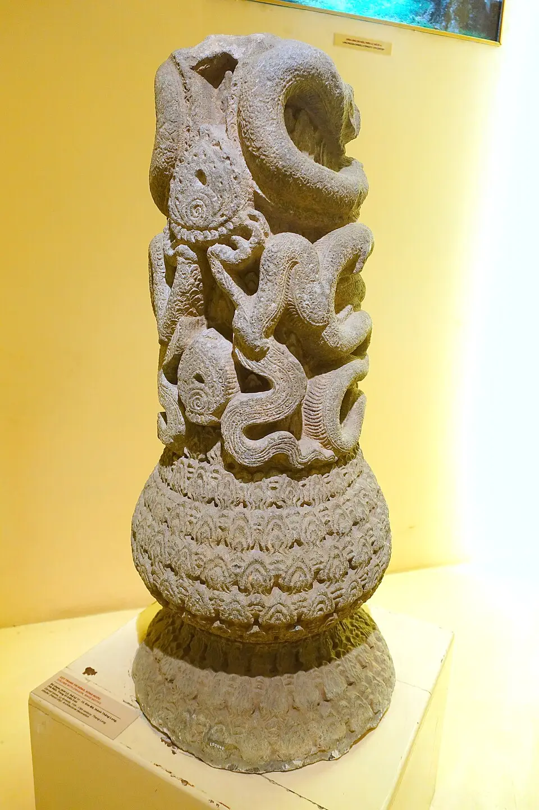
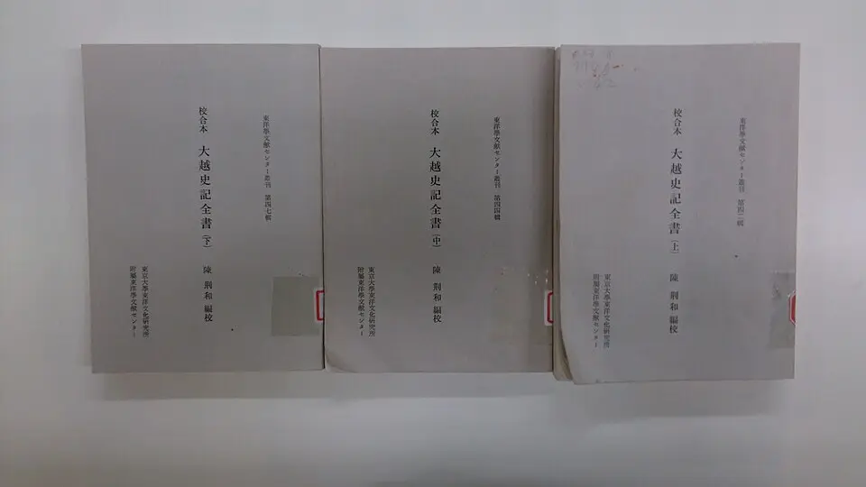

Lý Chiêu Hoàng: nữ hoàng duy nhất và cuộc đổi triều trong cung cấm
Năm 1224, một cô bé sáu tuổi lên ngôi, trở thành nữ hoàng duy nhất trong lịch sử Việt Nam. Chưa đầy hai năm sau, cô nhường ngôi cho chồng là Trần Cảnh, và triều Lý hơn hai trăm năm khép lại.

Tháng 10 âm lịch năm 1224, vua Lý Huệ Tông lập con gái thứ hai là công chúa Chiêu Thánh làm hoàng thái tử, rồi truyền ngôi và vào tu ở chùa Chân Giáo trong hoàng cung. Cô bé sinh tháng 9 năm 1218, khi đó mới sáu tuổi. Đại Việt sử ký toàn thư ghi là bảy tuổi, theo cách tính tuổi ta. Đó là Lý Chiêu Hoàng, nữ hoàng duy nhất trong lịch sử Việt Nam. Ai thật sự cầm quyền khi người ngồi trên ngai là một đứa trẻ?
Một triều đình trong tay họ Trần
Lý Huệ Tông lên ngôi năm 1210, giữa lúc trong nước loạn lạc. Ông phải dựa vào quân của họ Trần để giữ ngai. Toàn thư chép ông mắc bệnh điên và không có con trai, chỉ có hai công chúa. Hoàng hậu Trần Thị Dung là em gái của Trần Tự Khánh và Trần Thừa, những người lần lượt giữ chức Thái úy phụ chính. Người em họ của hoàng hậu là Trần Thủ Độ được giao chức Điện tiền chỉ huy sứ, nắm quân cấm vệ.
Khi Chiêu Hoàng lên ngôi, Toàn thư chép Trần Thủ Độ "coi giữ mọi việc quân sự trong ngoài thành thị". Những người hầu bên cạnh nữ hoàng cũng là con cháu họ Trần: Trần Bất Cập, Trần Thiêm, và Trần Cảnh, con trai Trần Thừa. Trần Cảnh cùng tuổi với Chiêu Hoàng. Toàn thư ghi cậu "mới lên 8 tuổi", cũng theo tuổi ta.
Toàn thư ghi lời Thủ Độ: "Nếu thực như thế thì họ ta thành hoàng tộc hay bị diệt tộc đây?"
Toàn thư chép gì


Đại Việt sử ký toàn thư kể chuyện đổi triều như một câu chuyện trong cung. Trần Cảnh làm chức Chính thủ, ban đầu hầu ở bên ngoài. Một hôm cậu được giao bưng nước rửa mặt nên được vào hầu bên trong. Chiêu Hoàng thích cậu, chơi đêm thì gọi đến, có lần vốc nước té ướt mặt cậu. Có lần cô lấy khăn trầu ném cho cậu. Trần Cảnh về kể lại với Trần Thủ Độ. Toàn thư ghi lời Thủ Độ: "Nếu thực như thế thì họ ta thành hoàng tộc hay bị diệt tộc đây?"
Theo Toàn thư, Thủ Độ đưa cả gia thuộc vào cung, đóng cửa thành và cửa cung, không cho các quan vào chầu. Rồi ông loan báo: "Bệ hạ đã có chồng rồi". Các quan đều vâng theo. Tháng 12 âm lịch năm Ất Dậu (1225), Chiêu Hoàng cởi áo ngự, mời Trần Cảnh lên ngôi ở điện Thiên An. Trần Cảnh tức Trần Thái Tông, vua đầu tiên của nhà Trần. Nhà Lý chấm dứt sau 216 năm.
Không phải bộ sử nào cũng kể như vậy. Đại Việt sử lược, bộ biên niên sớm hơn, cho rằng chính Huệ Tông dàn xếp việc nhường ngôi, có sự góp sức của Trần Thừa và Trần Thủ Độ, và quan Phùng Tá Chu đã khuyên vua. Trong Toàn thư, Huệ Tông và Trần Thừa gần như không có vai trò, còn Thủ Độ là người đứng sau mọi việc. Chính sử gia Ngô Sĩ Liên, khi bình luận, cũng trách Phùng Tá Chu đã viện dẫn chuyện Lữ hậu và Võ hậu để thành ra việc nhường ngôi. Những câu chuyện về khăn trầu hay chậu nước chỉ có nguồn là sử chép về sau, không có tư liệu đương thời nào kiểm chứng được.
Sau ngai vàng

Phần đời còn lại của Chiêu Hoàng gắn với những quyết định của người khác. Bà trở thành hoàng hậu Chiêu Thánh. Năm 1226, Toàn thư chép Trần Thủ Độ ép Lý Huệ Tông tự tử ở chùa Chân Giáo, rồi cưới Trần Thị Dung, mẹ của Chiêu Thánh. Năm 1237, vì hoàng hậu chưa có con nối dõi, Thủ Độ ép Thái Tông lấy chị dâu là công chúa Thuận Thiên, chị ruột của Chiêu Thánh, khi bà đang có thai ba tháng với Trần Liễu. Chiêu Thánh bị giáng xuống làm công chúa.
Năm 1258, sau cuộc kháng chiến chống quân Mông Cổ, Thái Tông gả bà cho tướng Lê Phụ Trần. Ngô Sĩ Liên chê việc này nặng lời. Hai người sống với nhau khoảng hai mươi năm, có một con trai và một con gái. Bà mất năm 1278, gần một năm sau Thái Tông.
Đền Đô ở Đình Bảng, Bắc Ninh, thờ tám vị vua nhà Lý, gọi là Lý Bát Đế. Vị vua thứ chín không có mặt ở đó. Có ý kiến cho rằng người đời sau đổ lỗi mất nước cho bà. Toàn thư thì cho rằng nhà Lý mất là do số trời, không phải lỗi của một cô bé lên ngôi năm sáu tuổi.